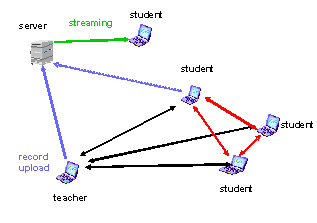

Abgeschlossene Projekte und Kurse
Musical / Notebookuniversity Teilprojekt Mobile Videokonferenzen
Auszug aus dem Abschlussbericht
Die zugrunde liegende Technik
Das digitale Audio-Video/Media Konferenzsystem daViKo [1] das in diesem Projekt eingesetzt wird ist eine proprietär entwickelte serverlose mehrpunktfähige Videokonferenzsoftware ohne zentrale Mehrfach-Konferenzeinheit (MCU). Es ist als Peer-to-Peer-Modell entworfen, und gedacht als Konferenzsystem das wie E-Mail zu benutzen ist. Dies bedeutet allerdings, dass das System nicht zum H323 Standard [3] konform ist.
Kernkomponente des Systems ist ein schneller, hoch effizienter wavelet-basierter Videokompressionscodec. Durch geeignete Steuerparameter kann die zugehörige Kommunikationssoftware im laufenden Betrieb auf Bandbreiten von 64 bis 4000 kBit/s eingestellt werden. Die Audiodaten werden mit einem MP3 Algorithmus komprimiert. Audio und Videodaten können sowohl über unicast als auch multicast - Protokoll übertragen werden.
Zusätzlich ist in das System auch noch ein Application Sharing Modul integriert, das gemeinsames Arbeiten und Teleteaching ermöglicht. Das System ist besonders geeignet für Intranetanwendungen bzw. drahtlos verbundene Videokonferenzen, da die notwendige minimale übertragungsbandbreite 64 Kbit/s beträgt und die Audio-/Videoqualität an die verfügbare Bandbreite angepasst werden kann. Für kleinere verfügbare Bandbreiten kann der Videostrom auch abgeschaltet werden. Das heiflt jeder einzelne Teilnehmer kann je nachverfügbarer Bandbreite 4 verschiedene Modi wählen: 1.nur hören, 2.hören und sprechen, 3.hören und sehen oder 4.hören, sehen und Video senden in verschiedener Qualität. Diese Modi können im laufenden Betrieb umgeschaltet werden.
WLAN Betrieb an der FHTW
Das in 1. beschriebene Video/Media- Kommunikationssystem wurde installiert und im mobilen 802.11b WLAN Einsatz getestet. Das Problem beim WLAN Einsatz von Videokommunikation ist, dass die Teilnehmer die an einem gemeinsamen Accesspoint ankoppeln sich die Bandbreite von max. 11 Mb/s teilen müssen. Bei einer solchen Technik erwies es sich als sinnvoll, dass nur der Lehrende immer voll per Video zu sehen und zu hören war, während die anderen Teilnehmer (d.h. die Studierenden) nur bei Bedarf oder nach Aufforderung von ihrem Videosendekanal Gebrauch machten.
Es wurden neben dem 802.11b WLAN Standard auch 802.11g WLAN eingesetzt wo eine max. Bandbreite von 54 MB/s zur Verfügung steht. Dabei sind bis zu 7 Notebooks über einen 802.11g WLAN Accesspoint in einer vollen peer-to-peer Videokonferenz zum Einsatz gekommen, d.h. jeder Konferenzteilnehmer konnte jeden sehen (im QCIF Videobild Format 176x144 Pixel) und in guter Audioqualität hören.
Realisierte Lernszenarien
Neben den Videokonferenz / Broadcast - Szenarien mit den erwähnten bekannten Bandbreitenproblemen, hat sich ein reduziertes Szenario als nützlich erwiesen. Wenn alle Teilnehmer in einem Raum sind, ist es sinnvoll die Powerpointfolien oder anderen PC-basierten Lernmaterialien des Vortragenden mit Hilfe der Applicationsharing -Funktion live per WLAN direkt zu den Teilnehmernotebooks zu schicken. Dies erhöht die Lesbarkeit und Lerneffektivität im Vergleich zu mit Beamern zentral projizierten Materialien erheblich. Darüber hinaus können die Teilnehmer selbst eigene Folien an die anderen Beteiligten und damit auch an den zentralen Beamer schicken (verteiltes Präsentieren).
Es gibt auch die Möglichkeit eines asynchronen verteilten Lernszenarios, d.h. jede teilnehmende Station (Notebook oder PC im LAN) kann die Sitzung aufzeichnen.In der Praxis wird dann ein Tutor oder ein Student die Aufzeichnung steuern. Damit wird der Vortragende von der Bedienung der Aufnahmebedientechnik entlastet .
Asyonchrones Lernen
Die Daten einer Vorlesung werden von einer in der Konferenz geschalteten Station in einem proprietären Format gespeichert. Die aufgezeichneten Audio/Video/Media Daten werden dann in ein Microsoft-Streaming Format transkodiert und auf einem Streaming-Server bereitgestellt und in der Lernplattform Clix verlinkt. Sie können dann von Clix als Web-basiertes Videostreaming zusammen mit den PC-Applicationen jederzeit im Internet über Windows-kompatible Browser abgerufen werden.
Mit Hilfe einer geeignet skalierten Version kann das gesamte Lehr- und Lernmaterial auch auf WLAN fähigen PDAs abgespielt werden. Dies erweitert die Mobilität der passiven Teilnehmer beträchtlich.
Fazit
- Es wurde ein Videokonferenzsystem installiert, das über WLAN Campusweit in der FHTW einsetzbar ist.
- Das System wurde im Laufe des Projektes in einzelnen Vorlesungen eingesetzt.
- Es wurde Video basierter Content in verschiedenen Varianten erzeugt
- Es wurden Experimente zur Mobilität bei Videosessions durchgeführt
Schwierigkeiten und Probleme
- Probleme mit den Audio-Einstellungen. Bei der übertragung von Application Sharing kann es zu kurzen Audiostörungen kommen.
- Bandbreitenprobleme treten auf wenn mehr als 6 Teilnehmer vollen 2 Weg- Videokonferenzbetrieb machen. Dies bedingt dass die Zahl der Teilnehmer mit vollem Rückkanal begrenzt wird auf die jeweils aktiven. Alle anderen Teilnehmer empfangen nur Audio und Applicationsharingdaten.
- Nicht alle studentischen Teilnehmer waren bei den Veranstaltungen im Besitz eines WLAN fähigen Notebooks.
Vorteile des Systems
Einfache Handhabung mit geringem Aufwand an Hardware. Der Vortragende und die Studierenden konnten praktisch ohne Installation und ohne Ortswechsel ihre Laptops einschalten Kameras und Headsets einstecken, die Verbindung zu den anderen Teilnehmern per Mausklick aufnehmen und die Vorlesung konnte starten.